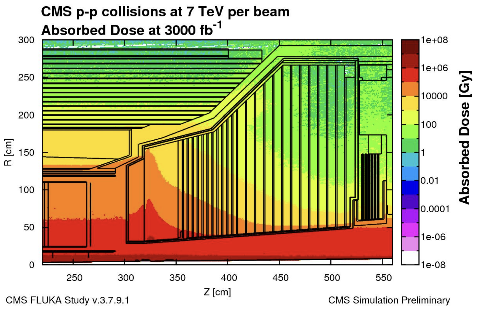
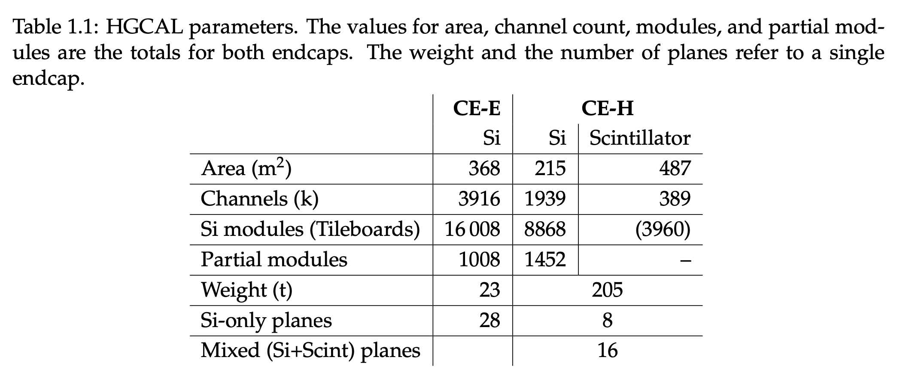
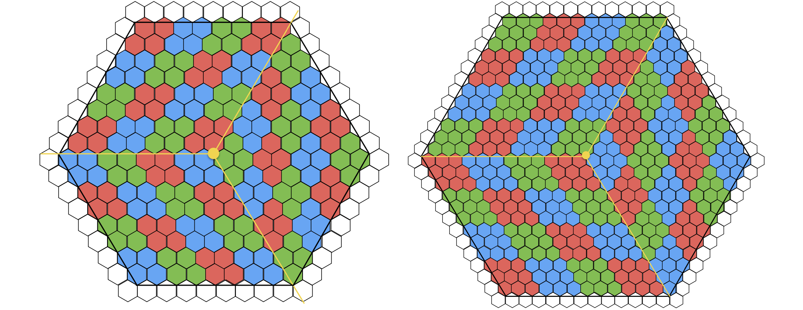
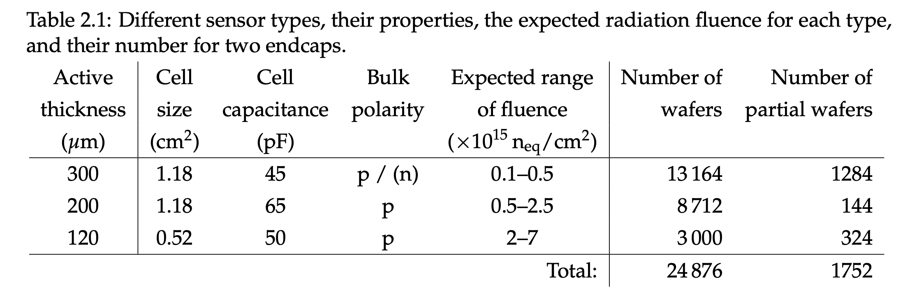

HGC TDR
https://cds.cern.ch/record/2293646/files/CMS-TDR-019.pdf
Highest dose:
- 2 MGy
- SiPMs get 3 kGy

- In order to keep the radiation-induced energy equivalent of electronics noise sufficiently low, SiPMs also have to be operated at around −30 ◦C. Hence the whole calorimeter will be operated at −30 ◦C. Will be cooled with two-phase C02.
- Thin SI active layers 100-300 µm. 300, 200, and 120 µm, in regions of increasing fluence
- EM 28 layers a depth of approximately 26 X0 and 1.7 λ
- 14 layers of these (60') cassettes provide the full 28 sampling layers.
- The absorber in the hadronic compartment consists of 12 planes of 35 mm thick SS plates followed by another 12 SS planes with a thickness of 68 mm
- Between these absorber plates sit silicon modules and scintillator tileboards mounted on 6 mm thick copper cooling plates to form 30 ◦ wide cassettes.
- total calorimeter thickness, perpendicular to the layers, of 10.7 λ, including the CE-E and the neutron moderator layer in front of the calorimeter

Sensors
Thin: The sensor leakage current increases linearly with fluence, resulting in increased noise and, combined with the very high bias voltages, leads to substantial power dissipation within the sensors themselves. These ob- servations motivated the investigation of sensors thinner than the 300 μm typically used so far,
Fleunce is dominated by neutrons
Ncells / Wafer = 3 (diamonds) x 4 (rows) x 4 (cols) x 4 (cells) = 192 (LD). (Cell Area 1.18 cm2) 3 (diamonds) x 4 (rows) x 4 (cols) x 9 (cells) = 432 (LD). (Cell Area 0.52 cm2) (But they have the same number of trigger inputs)

200 and 300 µm are LD 120 is the HD
Two cells per readout chip are segmented to include calibration pads with smaller size and correspondingly lower capacitance and noise.

the region |η| > 2.4 is covered exclusively by silicon sensors. An added advantage is that this also enables a good efficiency for muon identification in this region, where the ME1/1 chambers are not available.
Trigger:
- uses only every other layer
Tiles
While the dark current of SiPMs is quite low for unirradiated devices, it rises significantly after irradiation, as is common for silicon devices.
The ∆φ angular size of the cells is chosen to provide an even matching to the 5-degree cells of the barrel hadron calorimeter and to keep the size of the scintillator cell similar in physical size to the silicon trigger cells (sums of four 1 cm2 cells) at the boundary between the scintillator and silicon.
To match the geometry of the CMS endcap, the scintillator cells will be arranged in an r, φ grid. As a result, the cells nearer the beam line will be significantly smaller (4 cm2) than those at the outer edge (32cm2).
The area instrumented with scintillator is subdivided into tile-modules, which form annular segments of up to 40 × 50 cm2 in area. Each tile-module is a stack consist- ing of a tileboard and the scintillator tiles.
Electronics
EM has stringent requirements:
- 16 bits, to be able, at the lower end, to measure the MIP in the silicon sensors and, at the higher end, to record high-energy deposits from electromagnetic showers at shower maximum.
- low noise
- - integral linearity better than 1% over the full range;
- timing with precision better than 100 ps
- fast shaping time (peaking-time .20ns) to minimize the out-of-time pileup:
- on-detector digitization and data processing for zero suppression, for linearization and summing of the trigger data;
- maximum latency of 36 bunch crossings for the trigger primitives at the output of the detector
- buffering of the data to accommodate the 12.5 μs latency of the L1 trigger;
- high-speed readout links to interface with the 10 Gb/s low power GBT (LpGBT)serialiser
- low power
- compensation for leakeage current
- high-rad resistance
HGCROC:
- measures the charge and the time of arrival at 40 MHz frequency.
- Charge is measured in two ways:
- 10b ADC for small charges upto ~150 fC
- ToT for larger charges above 50 fC with 12b TDC up to 10 pC
The ToT front-end results in dead time for sensor cells with signals larger than than 250 fC.The length of the dead time depends on the signal size, and extends to 250 ns for a cell with 10 pC deposited.
The HGCROC comprises 78 channels (72 reading out standard cells, 2 reading out calibration cells, and 4 channels not connected to any sensor cells for common-mode noise estimation)
The power consumption of the HGCROC is estimated to be ≈14 mW per channel.
Follow-ups
Links:
202408151707